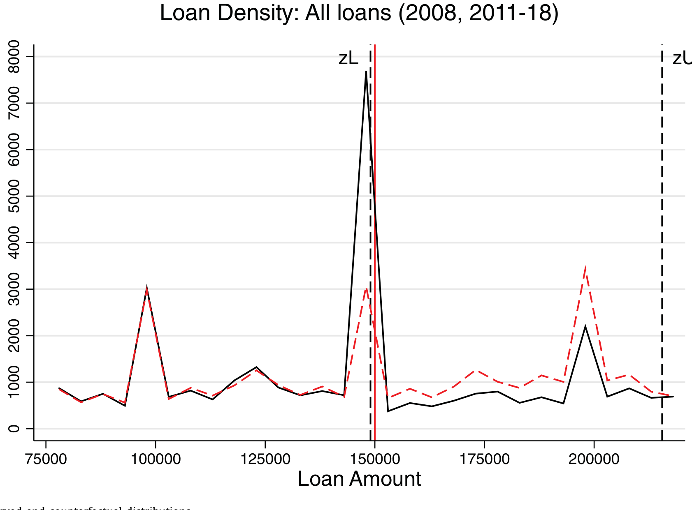
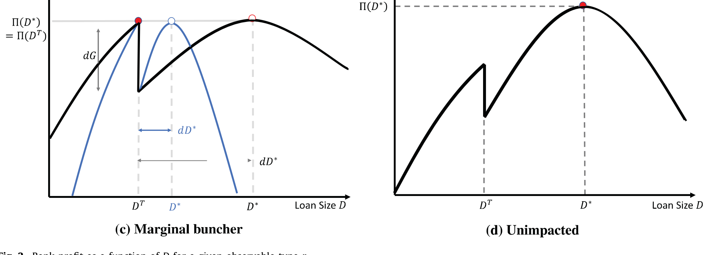
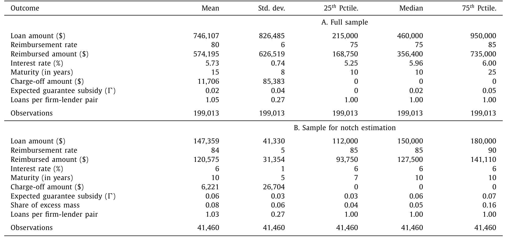
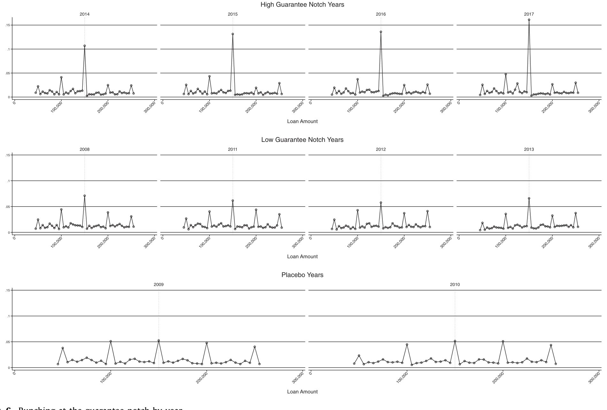
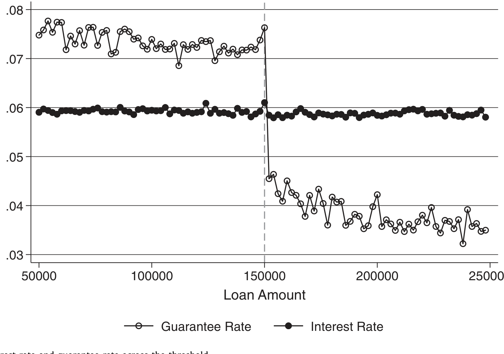
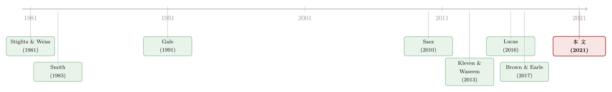

15 万美元那道缺口：贷款担保究竟放出了多少信贷
本文读的是 Bachas, Kim & Yannelis (2021, Journal of Financial Economics)：作者利用美国小企业管理局（SBA）7(a) 贷款在 $150,000 处担保率的「缺口」，用聚束估计量量出了银行信贷供给对担保的弹性——担保净补贴率每提高一个百分点（以贷款本金计），单笔贷款就多放出 $19,054。换句话说，政府担保不只是给银行的一笔补贴，它确实把信贷「放」了出来。
1 引言：一笔花掉的钱，到底买到了什么
先看一个大得有点吓人的数字。2019 年，美国联邦政府投向信贷市场的资金预计是 1.5 万亿美元，其中 1.4 万亿是以贷款担保（loan guarantee）的形式出现的——政府不直接放贷，而是替私人银行兜底，承诺在借款人违约、贷款被核销时，按一定比例把钱赔给银行。仅这一年，这些担保的补贴价值就高达 $37.9 billion。
钱花出去了。问题是：它买到了什么？
这里有一道争论了几十年的政策裂缝。赞成派说，担保把信贷送到了那些原本借不到钱的小企业手里——在信息不对称、抵押品不足、存在信贷配给（credit rationing）的市场上，这恰恰能把放贷拉回到有效水平，提升整体福利。反对派则一口咬定：这不过是给银行的一笔变相补贴。一篇 2012 年《华尔街日报》的评论说得很直白——银行把借款人引到 SBA 认证的门下，政府担保了 75% 到 85% 的本金，银行转手把这部分「无风险」的债权卖到二级市场，「earnings 就这么被推高了」。SBA 在 1984 年、1996 年都差点被关掉，进入 2010 年代仍然顶着关停的压力。
两派吵了几十年，可吵的其实是同一个参数：信贷供给对担保的弹性。
这一点，几乎所有相关理论都心知肚明。Smith (1983) 说，「要证明这些政策有效，就必须证明它们对信贷供给弹性有影响」；Gale (1991) 干脆把它称作「也许是单个最重要、也最有争议的参数」；Lucas (2016) 也提醒，「信贷供给弹性，决定了政府信贷项目里新增的借款，有多少会被私人借款的收缩所抵消」。
可吊诡的是——这么一个被所有模型反复校准（calibrate）的核心参数，此前几乎没人真正从数据里估过它。大家各取一个数代进模型，跨论文的取值范围大得离谱。
这就是本文的切口。作者说：如果信贷供给是没有弹性的，那么给不给担保、给多给少，银行都不会调整放贷规模，担保就真的只是一笔躺平的补贴；可如果供给富有弹性，我们就应该能看见银行为了拿到更高的担保，主动把贷款规模「挪」到更划算的那一边。
于是问题变成了：我们怎么把这种「挪」给看出来？
2 识别策略：把弹性变成一堆「看得见」的贷款
答案藏在 SBA 7(a) 项目的一个制度细节里。
7(a) 担保由两部分组成：一个赔付率（reimbursement rate）——每一块被核销的钱，银行能从 SBA 拿回来的比例；以及一笔费用（fee）——银行为参与项目要付的钱。关键在于，最高赔付率是按一条非线性的规模分界规则确定的：
贷款 ≤ $150,000 时，最高赔付率是 85%；一旦超过 $150,000，赔付率陡降到 75%。与此同时，担保费也在同一个门槛上跳升。两者叠加，使得越过 $150,000 这条线，整笔担保突然变得不划算。
这种在某个阈值处、待遇发生水平跳跃的设计，在公共经济学里有个专门的名字：缺口（notch）。它不同于拐点（kink）——拐点改变的是斜率（比如多赚一块钱、边际税率才变），而缺口改变的是水平（跨过一分钱、整笔的待遇就掉一档）。缺口制造的激励要凶猛得多。
接着，一个自然的问题是：面对这道缺口，理性的银行会怎么做？
设想一家银行，本来打算放一笔略高于 $150,000 的贷款。可它只要把贷款额往下压一点点、压到刚好 $150,000，担保率就从 75% 跳回 85%，费用也降一档。对一整段本来想放在 $150,000 右侧不远处的贷款来说，把规模压到门槛上、换取更慷慨的担保，是划算的。于是这些贷款会从门槛右侧「挪」过来，在门槛正下方堆出一座小山——这就是聚束（bunching）。
而这座山有多高，恰恰就量出了我们想要的弹性：
- 如果信贷供给没有弹性、银行不会因为担保去调整贷款规模，门槛下方就不会有任何多出来的堆积；
- 如果供给富有弹性，大量贷款会被挪到门槛划算的一侧，我们就会看到一座明显的「山」。
这正是聚束估计量（bunching estimator）的精髓：不去问任何人「你的弹性是多少」，而是让分布自己开口。门槛下方那堆「多出来的贷款」，就是信贷供给曲线在悄悄交出它的斜率。
具体怎么量？作者沿用 Saez (2010)、Chetty et al. (2011) 与 Kleven & Waseem (2013) 发展出的框架：先用门槛两侧、但剔除掉聚束区间的贷款分布拟合出一条光滑的多项式，把它当作「假如没有缺口、分布本该长什么样」的反事实分布（counterfactual distribution）；再把门槛下方实际观测到的贷款数，减去反事实预测的贷款数，差额就是超额质量（excess mass） \(\hat{B}\)。
把 Table 1 注释里对超额质量的定义写成式子，就是把缺口及其左侧「被排除区间」里观测与反事实的差额累加起来：
这个估计要成立，靠的是两条识别假设：第一，在没有缺口时，贷款规模的分布本该是光滑的；第二，存在一个定义良好的边际聚束者（marginal buncher）——即那个恰好对「挪还是不挪」无差异的银行/贷款类型，正是它界定了聚束区间的右边界。把这堆超额质量翻译成弹性，再翻译成美元，就得到了本文的核心数字。
下面这张图把识别的逻辑一次性摆了出来：实线是观测到的贷款分布，虚线是拟合出的反事实分布，门槛正下方那块凸起的阴影，就是 \(\hat{B}\)。

Figure 5: Observed and counterfactual distributions
3 一个简单的模型：银行为什么愿意把贷款「挪」下来
为了把上面这套直觉讲严谨，作者写了一个 illustrative 的模型，核心是刻画银行的利润如何随贷款额变化。
设想银行面对一个可观测的借款人类型 \(r\)（比如风险、行业、抵押情况）。给定 \(r\)，银行可以选择放出的贷款额 \(D\)。它的利润来自利息收入，扣掉资金成本与预期的违约损失，而担保正是为这块违约损失兜底——赔付率越高，银行实际承担的损失越小，利润越高。
关键就在缺口这里。当 \(D\) 从 $150,000 的左侧滑到右侧，赔付率从 85% 掉到 75%、费用又跳升，于是银行的利润函数在 $150,000 处出现一个向下的跳跃。作者用 Figure 2 把这条「带缺口的利润曲线」画了出来：

Figure 2: Bank profit as a function of D for a given observable type r
直觉是这样的：
- 对那些最优贷款额本就远在门槛右侧的类型，挪到门槛上要牺牲太多规模，不划算，它们老老实实待在右边；
- 对那些最优贷款额恰好略高于门槛的类型，把 \(D\) 压到
$150,000、换回 85% 的赔付率与更低的费用，反而更赚——于是它们全都「挤」到了门槛上； - 存在一个临界类型——边际聚束者——它对「挪到门槛」与「留在自己的最优点」恰好无差异。这个临界类型离门槛有多远，决定了聚束区间有多宽；而区间越宽、堆得越高，说明利润对担保越敏感，也就是信贷供给越富有弹性。
于是模型把一个抽象的弹性，对应到了一个可以直接在直方图上数出来的对象。Figure 1 进一步说明：弹性越大，门槛处银行利润与放贷规模的变化就越剧烈，聚束也越明显。这正是为什么「看见聚束」等价于「测到弹性」。
这里有个容易被忽视、但作者反复强调的前提：在这个项目里，绝大多数贷款的利率是顶到上限的。按 SBA 规则，期限超过 7 年、金额大于 $50,000 的贷款，利率最高只能比基准利率（prime rate）高 2.75%。样本中位数利率正好卡在 6%（中位 prime 为 3.25%）。利率几乎没有调整空间，意味着门槛附近的分布变化不可能由价格（需求侧）驱动，只能来自银行在数量上的取舍——这把识别牢牢钉在了供给侧。
4 数据
数据来自 SBA 7(a) 项目本身，依《信息自由法》（FOIA）公开。它记录了每一笔贷款的参与方（借款人、银行及其地址、行业）、非价格条款（贷款额、担保额、批准日期）、价格条款（利差加基准利率）、事后表现（被核销的余额）等。
- 样本期：2008–2017 年；剔除 7(a) Express 贷款，并删掉 22 笔数据明显有误的贷款（担保份额大于 100%）。
- 全样本：
199,013笔贷款，由3,066家银行放给177,049个借款人。中位贷款额$460,000，中位担保额$356,400，中位期限 10 年，中位利率 6%。 - 缺口估计样本：把贷款额限制在
$75,000到$225,000（左边界避开$75,000附近的第二个利率缺口，右边界取门槛的对称区间），得到41,460笔。这个子样本里担保净补贴率 \(\Delta\) 的均值是0.06，超额质量份额均值为0.08。
这里有个制度性的「防漏洞」设计值得一提：SBA 禁止银行向同一借款人发放「叠加（piggyback）」式的多笔贷款（担保贷款只能取次级留置权）。作者在数据里确认，「每个企业-银行对」的贷款数中位是 1.00、均值仅 1.03——银行并没有靠拆单来套担保。
变量的全貌见下表。

Table 1
5 主要结果：担保确实「放」出了信贷
第一，门槛下方确实堆出了一座山。 作者在 $150,000 正下方发现了显著的聚束，对应一个高度富有弹性的信贷供给。翻译成美元就是那句核心结论：担保净补贴率（以贷款本金的百分比表示）每提高一个百分点，单笔贷款就多放出 $19,054。这不是「显著但量级模糊」，而是一个能直接喂进福利分析的实打实的数。
接着，一个自然的检验是：如果这真是担保驱动的，那么担保越慷慨的年份，山就该越高。 结果正是如此——门槛两侧担保差距越大的年份，观测到的聚束越强。而且弹性逐年略有波动：在担保缺口刚刚变动过的年份之后，弹性会偏小——这与存在优化摩擦（optimization frictions）的预期一致，银行需要时间才能完全调整到新的最优。Figure 6 把逐年的聚束并排画了出来，慷慨年份的尖峰肉眼可见地更高。

Figure 6: Bunching at the guarantee notch by year
然后，真正关键的一步是那个近乎完美的安慰剂（placebo）。 2009–2010 年，作为《美国复苏与再投资法案》（ARRA）的一部分，SBA 临时把门槛两侧的担保率都提到 90%、并免除了费用——也就是说，缺口在这两年被抹平了。如果之前的聚束真的来自缺口，那么在缺口消失的年份，就不该有任何超额质量。
数据正是这样：2009–2010 年门槛两侧没有出现超额质量。这一脚把「也许是别的什么因素恰好在 $150,000 处发生变化」的担忧踢开了——因为同一条阈值还在，变的只有缺口本身。
于是反转出现： 这并不是一笔躺平的补贴。私人放贷对联邦担保高度敏感，担保确实把信贷放了出来，这些项目有「补贴银行」之外的真实效果。
但作者没有止步于此，而是回头堵住了几个最要命的「替代解释」：
- 会不会是利率（需求侧）在门槛处变了？ 不会。如下图所示，平均利率在跨越阈值时基本是平的——利率上限绑住了价格，分布的变化只能来自供给侧的数量调整。期限、循环贷款占比、核销比例在门槛附近也都看不出差异。

Figure 9: Average interest rate and guarantee rate across the threshold
- 会不会是银行拆单套担保？ 不会，制度禁止且数据证实（每企业-银行对中位 1 笔）。
不过有一个值得警惕的副作用：作者在 Figure 8 里检查了门槛处的风险转移（risk-shifting）——既然门槛下方拿到了更高的赔付率，银行是否会在那里放更「冒险」的贷款？核销率在缺口处的形态提示，更慷慨的担保确实可能诱发一定的过度冒险。这正是反对派担心的另一面：担保在放出信贷的同时，也可能鼓励银行把风险甩给纳税人。
6 文献脉络
把这篇论文放回它生长的两条藤蔓上，会看得更清楚。
第一条藤，是理论。 早在 Stiglitz & Weiss (1981) 就指出，信息不对称会导致信贷配给——好项目也借不到钱；Smith (1983)、Mankiw (1986) 顺着这条线论证，政府对信贷市场的干预（担保、补贴）在理论上能提升福利。到了 Gale (1990, 1991)、Lucas (2016)，问题被进一步收敛成一句话：这一切取决于信贷供给弹性。但理论家们能做的，只是把这个参数当作一个待校准的未知数。
第二条藤，是方法。 Saez (2010) 用纳税人在「拐点」处的聚束估出劳动供给弹性，开了用分布形状反推行为弹性的先河；Chetty et al. (2011) 把它精细化；Kleven & Waseem (2013) 则把工具从「拐点」推广到更凶猛的「缺口」，并用它揭示优化摩擦与结构弹性；Best & Kleven (2018)、DeFusco & Paciorek (2017) 把这套缺口/聚束工具搬进了房产交易税与按揭市场。Kleven (2016) 的综述则把这条方法论沉淀了下来。

这篇论文站在两条藤的交点上。 它借来缺口-聚束这把方法论的尺子，第一次从数据里量出了「信贷供给对联邦担保的弹性」——一个被无数模型校准、却从未被实证识别的参数。在 SBA 的经验研究序列里（Brown & Earle (2017) 估担保对就业的效果，Granja et al. (2018) 研究银行到借款人的物理距离），本文补上的是最上游的那一块：放贷规模本身对担保的响应。
值得一提的是，这条研究线后来一路延伸到了 COVID 时期的 PPP 担保。关于「一块钱的担保到底替银行换走了多少自己的风险」，可参见《一块钱的担保，换走了多少自己的风险？》；而当救命钱的去向由开户行决定时会发生什么，可参见《半万亿美元，砸出了多少个工作？》。
7 评论与延伸（Q&A + 研究方向）
(a) 几个可能的疑问
Q：缺口（notch）和拐点（kink）到底差在哪？为什么作者强调用的是缺口？
拐点改变的是边际待遇（斜率），比如越过某一档收入、边际税率才上升；缺口改变的是水平——只要跨过一分钱，整笔的待遇就掉一档。SBA 这里是典型的缺口：贷款从
$150,000多出一块钱，整笔的赔付率就从 85% 掉到 75%。缺口制造的激励远比拐点凶猛，因而聚束信号更强、更干净，识别弹性也更有力。
Q：借款人想借多少不是借多少吗？凭什么说是银行在「挪」贷款额？
这正是制度细节的妙处。SBA 贷款是「最后手段」，要通过「credit elsewhere」测试，且每个借款人只能拿一笔（担保贷款只取次级留置权），这给了银行实质性的议价与筛选权。叠加利率被上限绑死、几乎无法用价格调节，分布在门槛处的变化就只能解读为银行在数量维度上的供给响应。
Q：反事实分布是拟合出来的，会不会「想要什么形状就拟合出什么形状」？
这是聚束估计最常被质疑的地方。作者的底气来自两个安慰剂：一是 2009–2010 年缺口被 ARRA 抹平的那两年、以及担保率在门槛两侧本就相同的年份，都看不到超额质量；二是聚束强度随担保慷慨度同向变化。同一条阈值、同一套拟合方法，只有「缺口在不在」变了，结果就跟着变——这比任何拟合优度都更有说服力。
Q：$19,054 这个数能往多远外推？
要谨慎。它是在
$150,000这个特定门槛、由边际聚束者给出的局部弹性，刻画的是单笔贷款规模对担保净补贴率的响应。把它直接外推到很大的、很小的贷款，或外推到完全不同的项目，都需要额外假设。它最稳妥的用途，是给那些原本只能「拍脑袋取值」的校准模型，提供一个有据可循的锚。
Q：聚束是不是只是把贷款「挪小」了，并没有真正多放信贷？
在缺口左侧那座山，确实主要是集约边际（intensive margin）上规模被向下调整的结果。但这恰恰证明了信贷供给对担保有弹性——银行愿意为更高的担保改变放贷决策，这本身就反驳了「担保只是躺平补贴」。当然，规模被压到门槛上，也意味着担保的效果未必是无成本的（见下一问）。
Q：更慷慨的担保会不会让银行变得更冒险？
会有这个隐忧。Figure 8 检查了门槛处的核销，提示更高的赔付率可能诱发一定的风险转移——银行在拿到 85% 兜底的那一侧，敢放更险的贷款。这正是政策的两难：担保一边放出信贷，一边可能把尾部风险转嫁给纳税人。福利评判要把这一项也算进去。
(b) 几个可能的研究问题与提案
1. 把缺口-聚束搬到公司债的信用增级上
【经济故事】许多债券（如部分市政债、被第三方增信的结构化产品）也存在「担保/增信待遇随某个阈值跳变」的设计。如果发行人或承销商对增信敏感，债券规模/评级也该在阈值处聚束，从而量出信用市场而非小企业贷款市场的供给弹性。 【可行性】中。需要找到一条制度上干净的增信缺口，并有发行层面的微观数据（如 Mergent FISD）。难点在于债券规模的选择不像贷款那样连续可调，聚束可能更稀疏。
2. 担保贷款的二级市场流动性
【经济故事】反对派的核心叙事是「银行把无风险部分卖到二级市场赚钱」。那么担保份额更高（门槛下方 85%）的贷款，其二级市场的转手速度、价差是否系统性地更好？这能把「补贴渠道」直接量化。 【可行性】中。SBA 7(a) 担保部分确有活跃的二级市场，可尝试匹配二级交易数据，用同样的门槛做断点/聚束对照。挑战是二级市场成交数据的可得性与匹配精度。
3. 风险转移的事后违约后果
【经济故事】Figure 8 已提示门槛处可能有风险转移。一个自然的延伸是：门槛正下方的贷款，事后核销率、违约时点是否系统性地差于门槛上方「本该同质」的贷款？这能把担保的隐性社会成本钉死。 【可行性】高。本文数据本身就含事后核销余额，沿用同一缺口、把结果变量换成事后表现即可，识别框架现成。
4. 优化摩擦的银行异质性
【经济故事】作者发现缺口变动后的年份弹性偏小，归因于优化摩擦。哪些银行调整得快、哪些慢？经验丰富的 delegated lender、还是规模更大的银行？这能把「摩擦」从一个黑箱拆成可观测的银行特征。 【可行性】高。数据含 delegation status，并可链接 FDIC 的存款机构统计，做银行层面的异质性回归。
5. 与 COVID-PPP 担保的对话
【经济故事】PPP 是一次担保率近乎 100% 的「超级实验」。把本文的常态弹性，与危机期间近乎全额担保下的放贷行为对照，可以检验弹性在极端担保水平下是否稳定、还是出现非线性。 【可行性】高。PPP 数据公开且海量，已有大量相关研究（如本博客提到的 PPP 系列），关键是设计一个能与本文
$150,000缺口可比的识别。
评述者的判断
这篇论文最漂亮的地方，是把一个被无数模型「假设掉」的参数，硬生生从数据里看了出来——$150,000 那道缺口，把抽象的「信贷供给弹性」翻译成了直方图上一座你可以亲手去数的小山。$19,054 这个数字，配上 2009–2010 年「缺口被抹平、聚束随之消失」的安慰剂，构成了我读到过的、对「担保到底放没放出信贷」这一问题最干净的回答之一。利率上限绑死价格、从而把识别钉在供给侧的论证，也很见功力。
要说对识别的担忧，我有三点。其一，弹性的局部性——它来自 $150,000 处的边际聚束者，用它去给大额贷款或别的项目校准，需要更多的外部有效性证据。其二，风险转移这条暗线在文中更像是被「排除替代解释」式地处理掉了，但 Figure 8 的迹象提示，担保的社会成本未必小，福利结论应当把事后违约一并入账，而非默认聚束等于净福利改善。其三，聚束估计对反事实多项式的设定、对聚束区间右边界的选取天然敏感，虽然安慰剂很有力，我仍希望看到对带宽与多项式阶数的系统性稳健性展示。
后续我最想看到的，是把这套缺口工具接到事后表现与二级市场上——既然担保把信贷放了出来，那么这些被「放出来」的贷款，最终是更好地服务了被信贷配给的小企业，还是更多地喂大了银行的二级市场套利与尾部冒险？把这两条做透，才算真正回答了最初那道几十年的政策裂缝。
参考文献
- Bachas, N., Kim, O. S., & Yannelis, C. (2021). Loan guarantees and credit supply. Journal of Financial Economics 139(3), 872–894.
- Brown, J. D., & Earle, J. S. (2017). Finance and growth at the firm level: evidence from SBA loans. Journal of Finance 72(3), 1039–1080.
- Chetty, R., Friedman, J. N., Olsen, T., & Pistaferri, L. (2011). Adjustment costs, firm responses, and micro vs. macro labor supply elasticities: evidence from Danish tax records. Quarterly Journal of Economics 126(2), 749–804.
- DeFusco, A., & Paciorek, A. (2017). The interest rate elasticity of mortgage demand: evidence from bunching at the conforming loan limit. American Economic Journal: Economic Policy 9(1), 210–240.
- Gale, W. G. (1991). Economic effects of federal credit programs. American Economic Review 81(1), 133–152.
- Kleven, H. (2016). Bunching. Annual Review of Economics 8, 435–464.
- Kleven, H. J., & Waseem, M. (2013). Using notches to uncover optimization frictions and structural elasticities: theory and evidence from Pakistan. Quarterly Journal of Economics 128(2), 669–723.
- Lucas, D. (2016). Credit policy as fiscal policy. Brookings Papers on Economic Activity 47(Spring), 1–57.
- Mankiw, N. G. (1986). The allocation of credit and financial collapse. Quarterly Journal of Economics 101, 455–470.
- Saez, E. (2010). Do taxpayers bunch at kink points? American Economic Journal: Economic Policy 2(3), 180–212.
- Smith, B. (1983). Limited information, credit rationing, and optimal government lending policy. American Economic Review 73(3), 305–318.
- Stiglitz, J., & Weiss, A. (1981). Credit rationing in markets with imperfect information. American Economic Review 71, 393–410.